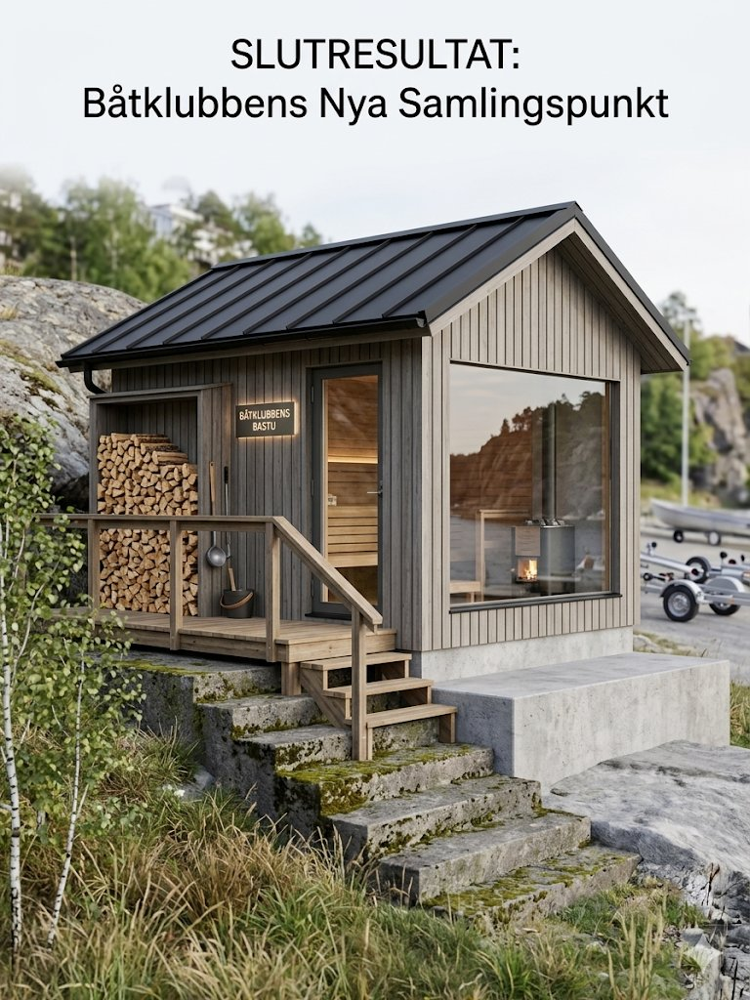
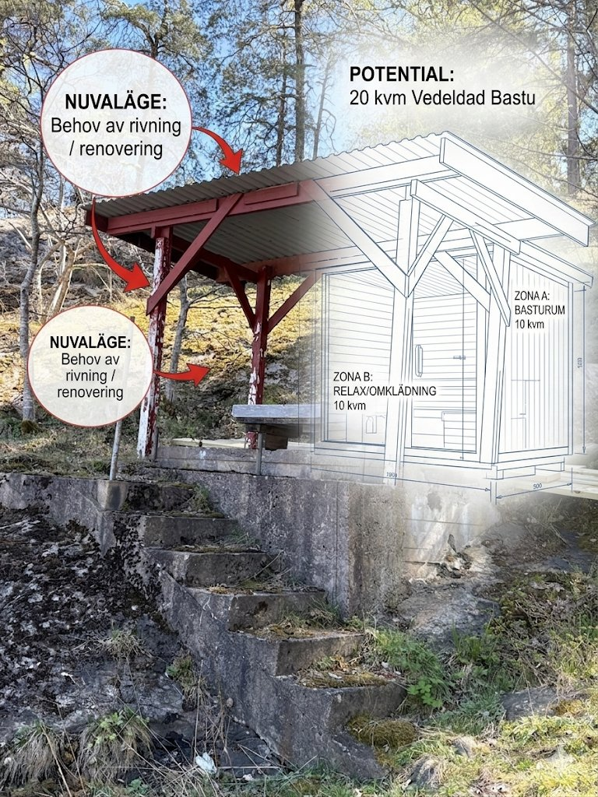

En vedeldad klubbbastu ovanför betongtrappan
Ett förslag om att ersätta det gamla skärmtaket med en bastu för medlemmarna, finansierad helt till självkostnad.
Christopher Åhl, medlem · november 2026
Det gamla skärmtaket blir klubbens samlingspunkt året runt
Vi bygger på den gjutna grunden ovanför betongtrappan, med panoramafönster mot inloppet och en vedeldad kamin.
Bastun ska inte ge vinst. Avgifterna sätts så att de betalar av investeringen och täcker driften, varken mer eller mindre.

Folk står i kö för att få basta. Vi har platsen
Bastu har fått ett rejält uppsving i Stockholmsområdet. Föreningsbastur vid vattnet har långa köer, och kommunerna har svårt att hinna med.
Här hemma pratas det om bastu i de lokala Skurugrupperna, till exempel Skuru morsor (ca 300 medlemmar) och Skuru hockey (ca 30). Bastuföreningarna i närområdet beskrivs som fulltecknade.
En klubbbastu ger våra medlemmar det som andra står i kö för, och kan bli ett skäl för nya att söka sig till klubben.
Köer till föreningsbastur i Stockholm
Antal personer i kö. Vinterviken enligt Fokus 2026, Fredhällsbadet enligt SVT (början av 2025), Tanto vid Årstaviken: ca 600 medlemmar enligt föreningen.
Bastu och kallbad är bra för kroppen, och för klubben
- HjärtatEn finsk studie med 1 688 män och kvinnor följda i många år: de som bastade 2–3 gånger i veckan hade omkring 30 % lägre risk att dö i hjärt-kärlsjukdom än de som bastade en gång. Ju fler minuter i veckan, desto lägre risk.
- KallbadEn forskningsöversikt från 2025 (11 studier, 3 177 deltagare) fann effekter på stress, sömn och livskvalitet, och 29 % färre sjukdagar bland dem som duschade kallt.
- MötesplatsBastun växer som social yta, ett alkoholfritt sätt att träffas och ett motmedel mot ensamhet.
Studierna visar samband, inte bevisad orsak. Den som har hjärtproblem bör prata med sin läkare innan bastu och kallbad.
Risk att dö i hjärt-kärlsjukdom
Jämfört med 1 bastubad i veckan (= 100)
Kvällssol över inloppet, och fler ögon på båtarna
Ett av klubbens bästa lägen
Utsikt mot inloppet till Stockholm och sol långt in på sommarkvällarna. Platsen framför trappan passar för en enkel grillplats, så bastun blir en samlingspunkt för hela klubben och inte bara för de som badar.
Mer liv i hamnen ger färre stölder
Polisen konstaterar att Sverige har haft flest båtstölder i Europa och att båtklubbar som arbetar förebyggande drabbas betydligt mindre. Risken ökar när färre rör sig i hamnen, på hösten och i mörker. Det är precis då bastun används som mest.

Skärmtaket är slitet, men grunden är värd att bygga på
- Stommen behöver rivasFlagnande färg, öppen konstruktion och enkelt plåttak. Virket går inte att återanvända till en sluten byggnad.
- Grunden och trappan finns redanGjuten platta och betongtrappa ger en färdig plats med utsikt över hamnen. Den behöver inspekteras och lagas, inte göras om.
- Klubben äger marken, vilket är ovanligtDe flesta båtklubbar i området arrenderar sin mark av kommunen. Vi äger vår, så ingen kan säga upp arrendet eller ta tillbaka platsen. Det gör det tryggt att investera och betala av på tio år, och ingen markägare behöver godkänna bygget.
- Löst virke ligger på markenDet städas bort i samband med rivningen.
Två rum: ett basturum och ett relaxrum
- BasturumLavar i två nivåer för 8 till 10 personer, panoramafönster mot marinan och vedeldad kamin med stort stenmagasin.
- Relax och omklädningBänkar, krokar och vedförråd. Robust panel som tål blöta fötter och seglarstövlar.
- TeknikHelisolerad stålskorsten, självdragsventilation, brandskyddsskivor kring kaminen enligt tillverkarens anvisning.
- UtsidaStående panel som får grånas, isolerat plåttak som dämpar regnljud.
Idén håller. Fyra saker måste redas ut innan vi bestämmer storlek
Plattformen är mindre än bastun
Den gjutna ytan ser ut att vara 8 till 12 kvm. Med 20 till 30 kvm får vi gott om plats för relaxdel och vedförråd, men då måste vi bygga ut mot berget eller åt sidan, med nya plintar och mer material.
Kaminen måste passa rummet
10 kvm basturum med normal takhöjd blir över 20 kubikmeter, och glas räknas som extra volym. Det kräver en större kamin än Legend 240, som är byggd för 10–20 m³, eller ett mindre basturum.
Ritningen är en bild, inte en ritning
Den AI-gjorda ritningen visar en stämning men har felstavade texter och inga verkliga mått. Vi behöver en konstruktör som mäter upp grunden.
Kalkylen saknades
Underlaget slutade före siffrorna. Därför har jag tagit fram en egen bedömning för två alternativ på nästa bild.
Mellan 205 000 och 280 000 kronor, beroende på storlek
Bedömning med materialpriser från byggvaruhus och ideellt arbete av medlemmar. Anlitar vi en entreprenör för hela bygget blir det dyrare. Som jämförelse kostar en färdig bastustuga med panoramafönster och vedkamin omkring 230 000 kr levererad, utan grundarbete. En Legend 240-kamin kostar runt 10 000 kr.
| Post | A · 12 kvm | B · 20 kvm |
|---|
Bastun är till för medlemmarna. Den ska gå jämnt ut, inte gå med vinst
Varje krona som kommer in från bastukort och gästbad har bara två uppgifter:
- 1. Betala av investeringenLån eller uttag ur klubbens fond betalas tillbaka på ett bestämt antal år.
- 2. Täcka den löpande driftenVed, försäkring, sotning, städning och en underhållsfond så att bastun håller.
- Investeringen stannar hos medlemmarnaEftersom klubben äger marken bygger vi på vår egen mark. Bastun blir en tillgång som ingen kan ta ifrån klubben när den är avbetald.
- Blir det över, sänks avgiftenEtt överskott går tillbaka till medlemmarna genom lägre avgift nästa år, eller till underhållsfonden. Inget annat.
Det som förr var krångligt sköts nu i en app
Förr gjorde nycklar, listor och städscheman en föreningsbastu till ett heltidsjobb för styrelsen. I dag finns färdiga system, och samma typ av bokning används redan för bastur och tvättstugor i bostadsrättsföreningar.
Bokningssystem som kan kopplas till lås finns från några hundralappar i månaden.
- Boka i mobilen
Medlemmen bokar ett pass. Familjepass, damkväll eller öppen kväll läggs upp som olika passtyper. - Koden gäller bara under passet
Ett digitalt kodlås öppnar för den som har bokat. Ingen nyckel ska lämnas över, och varje öppning loggas. - Foto vid utcheckning
Den som bastat laddar upp en bild på rummet när den går. Då syns direkt om något behöver åtgärdas. - Klubbens ungdomar kontrollerar
Ungdomar i klubben gör städkontroll och extrastädning mot ersättning. De får ett första extraknäck och klubben en bastu som alltid är ren.
Avgiften räknas baklänges från kostnaden
Drift antas till 32 500 kr per år: underhållsfond 10 000, ved 8 000, städkontroll av klubbens ungdomar 6 000, bokningssystem och digitalt lås 3 500, försäkring 3 000, sotning och brandskydd 2 000.
Det här behöver vi ha klart innan första spadtaget
Bygglov, inte attefall
Attefallsreglerna gäller bara på en tomt med ett en- eller tvåbostadshus, alltså villor och fritidshus. Klubbens mark räknas inte dit, så även med 20 till 30 kvm behöver vi bygglov och anmäla eldstaden. Nacka kommun avslog 2023 en ansökan om en kommersiell flytande bastu vid Sickla strand, så vår ansökan behöver vara gedigen. Vårt läge är ett annat: en ideell klubb på egen mark som ersätter en befintlig byggnad.
Strandskydd
Vid vattnet gäller strandskydd. Det talar för oss att klubben äger marken, redan använder platsen och att vi ersätter en befintlig byggnad. Kommunen har tidigare gett dispens till en båtklubb med motiveringen att platsens värde för strandskyddet var litet.
Brand och säkerhet
Skorsten och avstånd enligt tillverkaren, besiktning av sotare innan första eldning, ordningsregler för eldning och en ansvarig per pass.
Grunden är största osäkerheten
Därför börjar vi med en uppmätning innan vi väljer storlek. Resten av kalkylen bygger på kända priser.
Jag föreslår att styrelsen går vidare i tre steg
Inget byggbeslut nu. Först fakta om grund och tillstånd, sedan ett skarpt förslag till årsmötet med exakt kostnad och avgift.
- Arbetsgrupp och uppmätning
Tillsätt en liten bastugrupp. Låt en konstruktör mäta upp grunden och bedöma om A eller B är rimligt. - Förhandsbesked från kommunen
Stäm av bygglov och strandskydd innan vi lägger pengar på ritningar. - Skarpt förslag till årsmötet
Ritning, offert, avbetalningsplan och avgift enligt självkostnadsprincipen. Medlemmarna beslutar. - Bygg med medlemmarna
Rivning och montering som arbetsdagar. Det sänker kostnaden och gör bastun till vår.